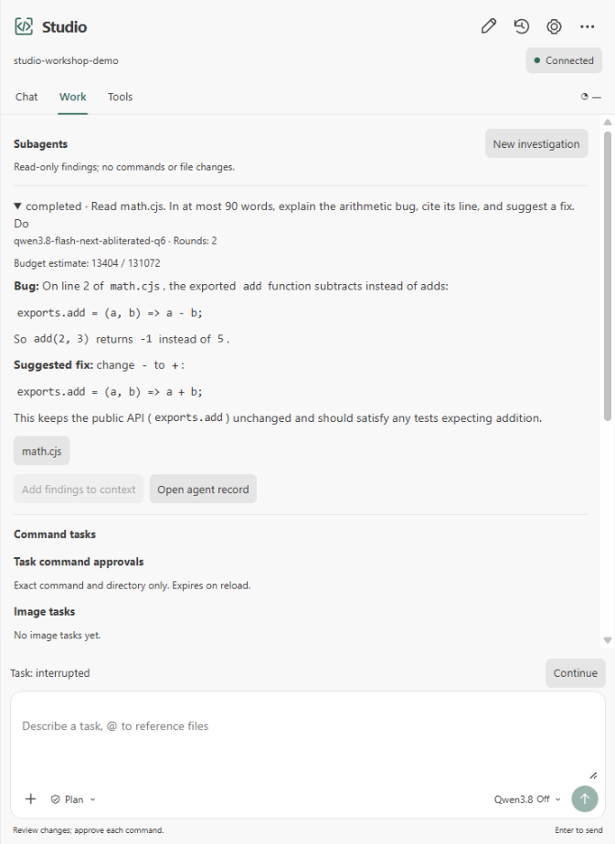
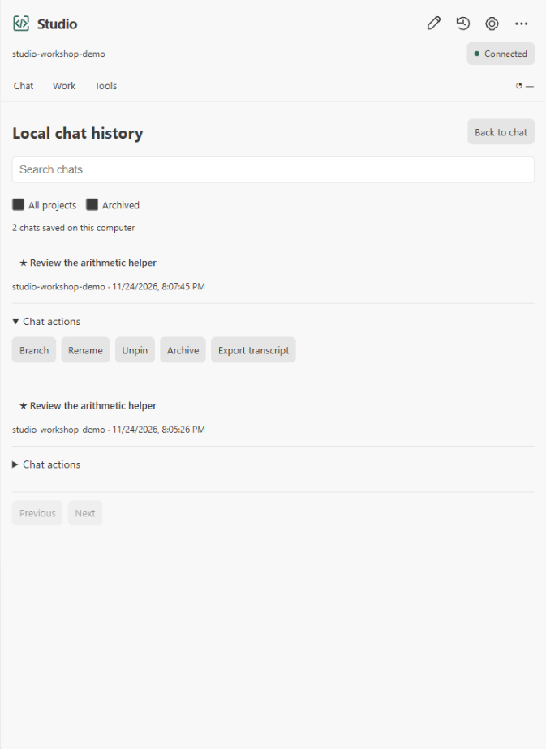

12 - Delegate Investigations and Continue Local Conversations#
Time: 45–60 minutes. Requires: Labs 9–10 and direct model API mode.
Outcomes#
Launch a bounded subagent（子代理）, distinguish findings from execution evidence, resume/branch local chats and preserve constraints during context compaction.
1. Delegate a focused question#
In Plan mode, choose Task details → Subagents → New investigation → Review:
Read math.cjs. Explain its arithmetic behavior with file and line references.
If it contains a bug, suggest the correct operator. Do not edit files or run tests.
Alternatively use /agents followed by the task for an Explore investigation. Each child gets its own history, budget, pinned constraints, project guidance and selected skill guidance—not the full parent transcript. Model/thinking configuration is captured at start.


Fig. 3 Historical 0.13 desktop VS Code capture after real model inference; the 0.14 equivalent lives under Task details → Subagents. The exercise file remains unchanged. The child did not execute commands or tests.#
Expand the row and inspect its evidence paths. Add findings to context inserts the report once without sending another request. Open agent record opens a private local file; do not publish records containing project data.
As of 0.14, child inputs use the server tokenizer when available and otherwise a conservative estimate; reported usage replaces the provisional per-call reservation. The final round is reserved for a tool-free report.
Defaults: one concurrent child (maximum two), 16,384 context tokens, conservative cumulative 64,000-token budget, six rounds and 180 seconds per running investigation. A foreground parent request may overlap a child. Reported usage and conservative estimates differ. Oversized guidance can exceed the budget before the first request: simplify it or deliberately adjust the limit.
Keep a structured-data investigation small#
For a supplied JSON page and a known codebook, ask the parent to delegate a bounded investigation:
Delegate one read-only review with maxRounds=2. Read audit-demo.json with
local_read_json, pointer /packet, offset 0, limit 2. Use the supplied rules
and return the two item IDs, proposed labels, exact evidence quotes and
uncertainties. Do not scan the repository or request another page.
The first round can read the page; the second is reserved for the result. Larger code investigations need more rounds. Studio 0.14.1 detects repeated covered JSON pages in both the parent and children and requests findings instead of more reads. Keep child concurrency at one when the model server has one serving slot. Raising concurrency cannot create additional server capacity and can consume a child’s time limit while it waits.
Validate response structure, item coverage and verbatim evidence before accepting a batch. A model can return valid JSON with incorrect judgments. Preserve original observations and keep automated development annotations separate from human validation.
2. Prove the read-only boundary#
Request an investigation that asks to edit math.cjs or run node math.test.cjs. The dispatch allowlist offers neither edits nor terminal commands, MCP effects, hooks or nested delegation. Compare the file and executed command jobs: neither should change because of the child.
Start another investigation and cancel its Subagents card. It may finish first; record that honestly instead of claiming cancellation passed. Pause/Stop also cancels investigations. Finish or cancel children before changing chats or connection settings.
After reload, unfinished child records become interrupted without automatic replay. Evidence paths are not immutable snapshots: re-read relevant files before acting on old findings.
3. Search and resume history#
Click History in the header or type /history. Search titles and user/assistant message text. Current-project scope is default; All projects broadens it. Search stays local.


Fig. 4 Saved conversations from the isolated workshop profile, not personal chat history.#
Open Chat actions, rename and pin a conversation. Add a message and return to History: autosaving should retain these choices. Archive, enable the Archived filter, and unarchive it. Click its title to resume.
Branch creates a new conversation/task with previous context, constraints and plan text. Pending edits, queued input and approvals are cleared. It does not create a Git branch, clone files or rewind changes. The original remains available. Another project’s chat opens that folder in a new window; missing folders must be restored first.
Export writes user/assistant text as Markdown, not a complete backup of images, tools or credentials. The transcript itself can contain sensitive information; review before sharing.
4. Preserve constraints while compacting#
Save these under Task details → Plan → Fixed constraints:
Keep the public API unchanged.
Do not edit existing tests.
Do not add runtime dependencies.
Use /context to inspect sources, then /compact after accumulating useful history. Check the goal, decisions, results and remaining work. Semantic compression uses the model; extractive fallback retains selected evidence. Pinned constraints remain authoritative; model-generated constraint candidates require review.
Ask a follow-up that could tempt an unnecessary dependency. Confirm the saved constraints remain present. Constraints guide the model; permission enforcement belongs to execution code.
Compaction also triggers automatically before a model request when input exceeds its reserved input budget and older turns exist. It is independent of Auto permission mode. The active turn is retained, then tool previews may be reduced if needed; this is not an unlimited-memory guarantee. Lab 13 gives the exact calculation, a reproducible drill and the comparison with Claude Code.
5. Trace and test#
Read src/agents.js before src/agent-controller.js: queue/budget/records first, trusted tools and authorization second. Follow src/session.js, src/experience-controller.js and media/experience13.js for metadata and UI messages.
From source/, on all client platforms:
node --test test/experience13.test.js test/context06.test.js test/controller.test.js
Complete implementation checks:
# Windows PowerShell
npm.cmd test
python test/bridge_test.py
python test/comfy_bridge_test.py
npm.cmd run build
npm.cmd run check:release
node test/run-host-suite.js
# Linux / macOS
npm test
python3 test/bridge_test.py
python3 test/comfy_bridge_test.py
npm run build
npm run check:release
node test/run-host-suite.js
# Headless Linux: xvfb-run -a node test/run-host-suite.js
Native checks download pinned VS Code and use isolated profiles. Fixture passes are not live-model success; see validation.
Acceptance: a completed investigation, file unchanged, attached finding, renamed/resumed/branched chat, and retained fixed constraints. Record interruption/cancellation drills separately if performed.
Remaining release work#
Parallel writing agents, automatic worktree merges and complete Claude/Codex plugin runtimes are outside this preview. The 20-case real-task release evaluation is incomplete. Local records are not encrypted by Studio. Multi-window metadata updates are last-writer-wins; large history searches may be slow.
Quiz: Does a child’s “looks correct” mean verified? Answer: No. The parent needs current file evidence and actual authorized checks.
Previous · Workshop guide · Next: modes and context · Validation